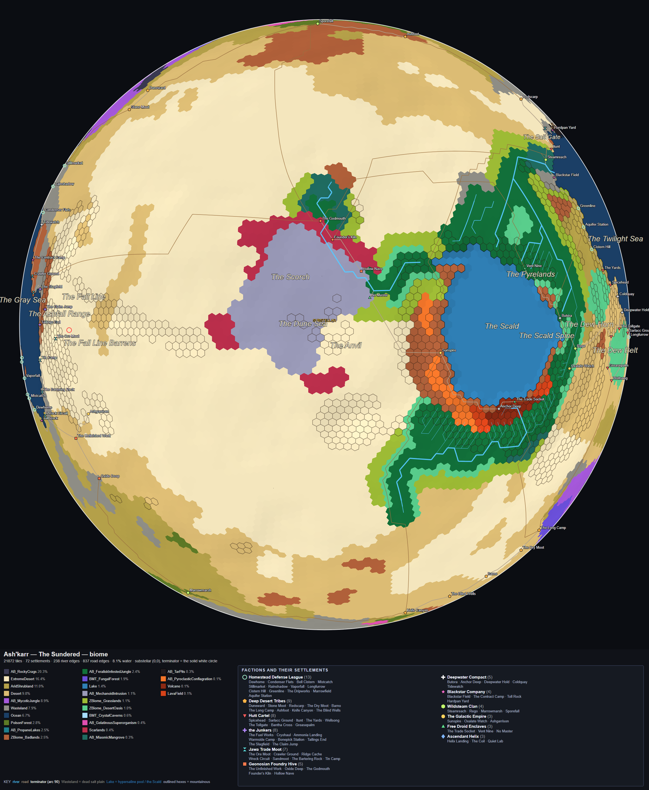
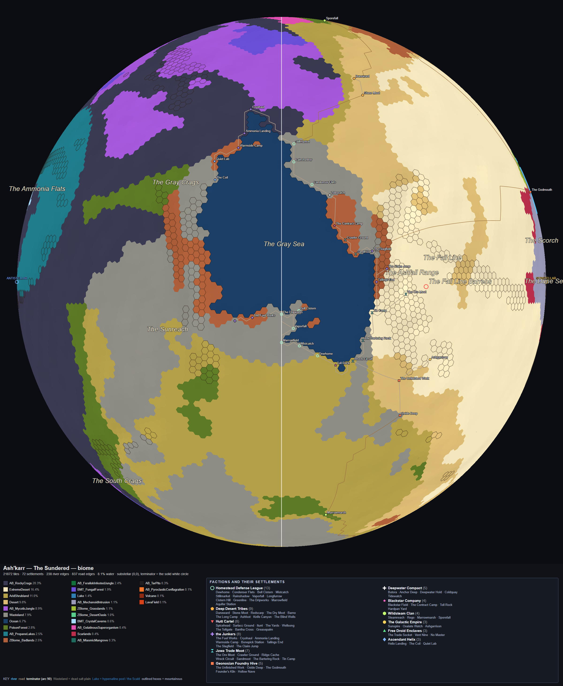
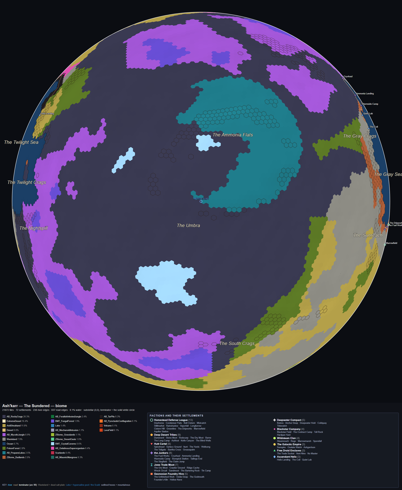
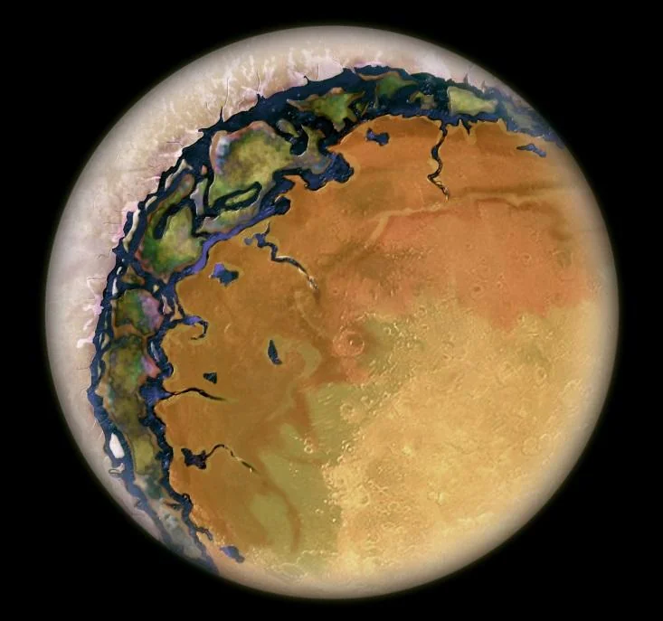
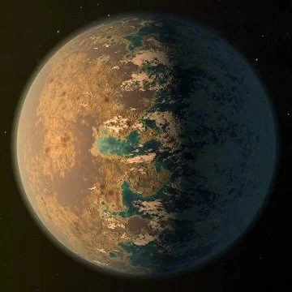

Ash'karr as orthographic globes, beside the reference photographs
First globe renders of the Ash'karr world map, at three centres, shown at identical width next to the two binding reference images. 2026-08-20.
Our renders — world/view

Ours — centre 0° lat, 0° lon
world/view/ASHKARR_WORLDMAP.biome.ortho.c0-0.png

Ours — centre 0° lat, 90° lon (terminator)
world/view/ASHKARR_WORLDMAP.biome.ortho.c0-90.png

Ours — centre 0° lat, 180° lon (night cap)
world/view/ASHKARR_WORLDMAP.biome.ortho.c0-180.png
Reference photographs — research/Jawa

Reference 1 — tidal-lock planet map
research/Jawa/planet_map_tidal_lock_inspiration.webp

Reference 2 — tidal-lock planet, second view
research/Jawa/planet_inspiration_tidal_lock2.webp